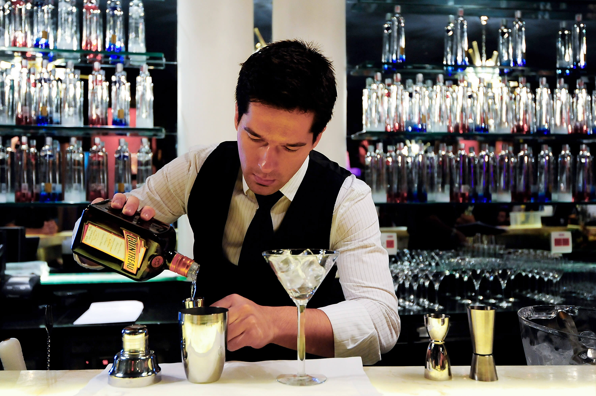

Una tradicion que paso de generación en generación
Hijos de un bartender,
crecimos sabiendo como preparar cualqueir trago. Sin embargo, nunca pudimos probar
nuestras creaciones con alcohol ya que nuestro padre estaba totalmente en contra.
¡Era tragi-comico! Imaginese a dos hermanos preparando cocteles para la familia de un amigo pero, ¡Sin poder probar una gota por respeto a su padre!
Nuestro padre siempre fue trabajador de tiempo completo, vivía por el trabajo. Justamente por eso, nunca se hizo el tiempo de armar un negocio mas allá
de su pequeño bar. Cuando le comentamos la idea para Ghiaccio, nuestro padre se emociono. No solo estaba feliz por los proyectos de sus hijos si no
porque ellos habían seguido su ejemplo.

Dos hermanos con una pasion desde chicos por llevar el negocio
de su padre al siguiente nivel
Esta idea para un recetario confiable para los bartender, no surge hace poco. Desde chicos, y un poco de verguenza me da decirlo, eramos bastante comodos.
Nos resultaba tedioso tener que buscar en libros enteros una receta, o llevar en la mochila gran cantidad de libros pesados. Encima ningún libro tenia todos los tragos que podíamos hacer, entonces antes de hacer tragos, agarabamos la mochila y empezabamos a buscar el libro indicado. Esto no era tedioso solo para nosotros, sino para el que esperaba el trago. Con mi hermano siempre nos gusto atender bien a nuestros invitados, entonces charlando a los 18 surgio la idea. ¿Y si hacemos un recetario que contenga todas las recetas y puedas ir agregando? Nuestro conocimiento de internet no llegaba tan lejos, pero teniamos una idea que perduro hasta el momento que decidimos hacer de Ghiaccio una realidad.
